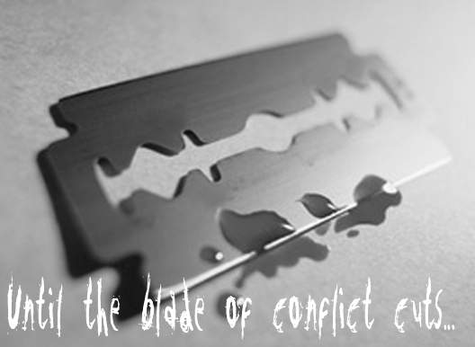
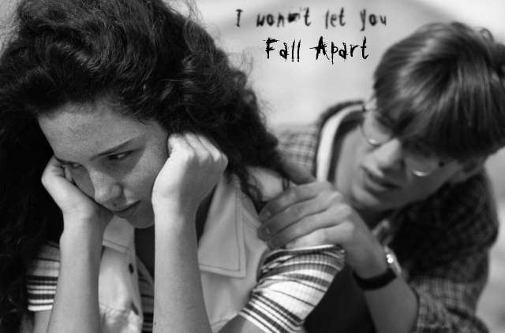
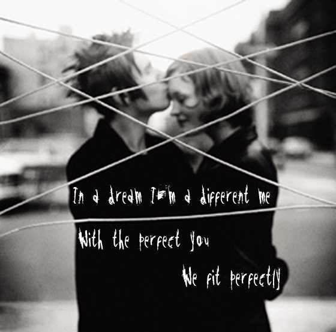
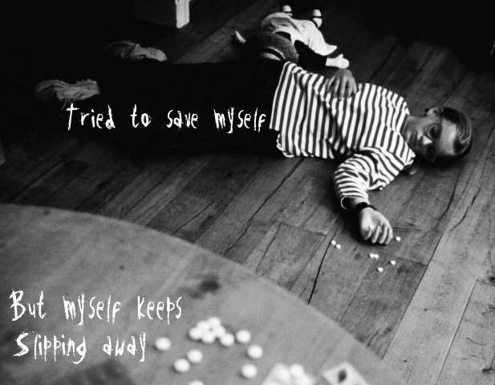

Pics / Artwork
Original text from art.shtml: "My 'art.' Most of the words are taken from Nine Inch Nails songs, but a few are lines from my poems."

Artwork page 1 (5 pieces)
Artwork page 2 (5 pieces)
Artwork page 3 (5 pieces)
Artwork page 4 (3 pieces)Gallery images are available in the downloaded local reconstruction. They are not automatically cleared for public hosting.